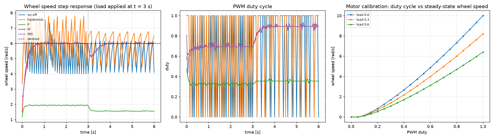
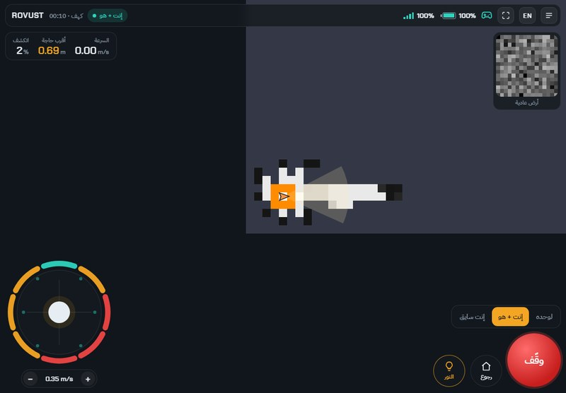
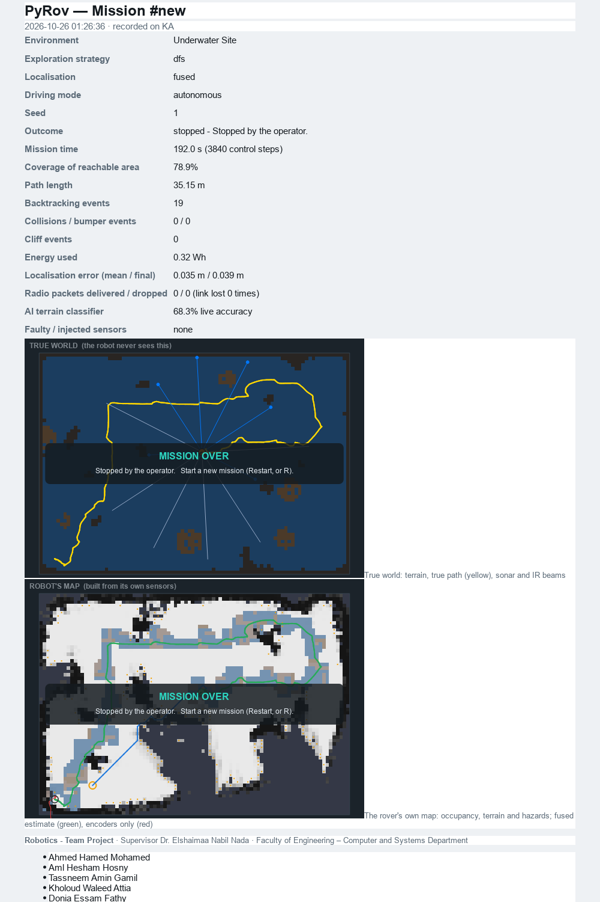
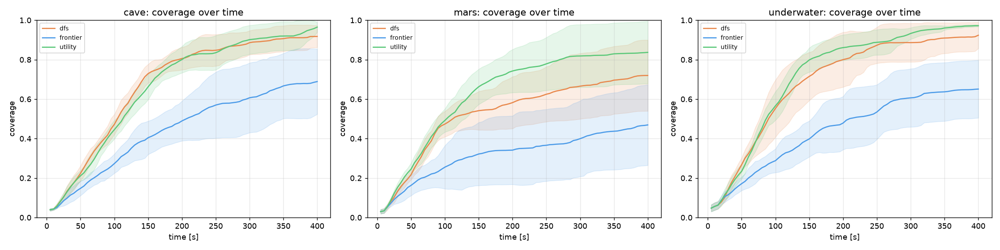

One robot, three unknown worlds — cave, Mars, underwater — simulated from the motors up.
Supervisor: Dr. Elshaimaa Nabil Nada Faculty of Engineering — Computer and Systems Department
ABSTRACT
A rover that explores a place it has never seen — safely, on its own
No map, no GPS. The rover must move safely, avoid walls and pits, build a map of what it finds, decide where to go next and return before the battery runs out. We built one exploration engine and three selectable environments, and simulated the robot from the actuator level up so that every topic of the course appears in a working system.
3
environments, one unchanged codebase
20+
sensors with real physics and faults
264
measured runs behind every claim
97%
of the reachable area mapped by the AI explorer
PyRov · Abstract
INTRODUCTION
Why a robot has to decide for itself
Many missions happen where people cannot go and radio cannot follow: unstable caves, disaster zones, mines, other planets. A Mars rover waits minutes for every command, so it must act on incomplete information with no existing map.
Building a physical robot for every one of these places is slow, expensive and risky. A simulator lets us test the same algorithms in all of them, repeatably, and measure the difference.
The idea: one exploration engine; each environment is only a configuration — map, terrain, sensors, noise, slip. The robot’s software never changes.
PyRov · Introduction
INTRODUCTION
Every course topic is a working layer of the rover
Course topic
What PyRov does
Module
Actuators · PWM · H-bridge
Two DC motors, non-linear duty → speed, load, calibration table
robot/motor.py
Encoders · A/D
480-tick incremental encoders, 10-bit ADC on every analog sensor
encoder.py · sensors/base.py
Control
Discrete PID per wheel, driving-straight controller, on-off and hysteresis
robot/control.py
Sensors and placement
Sonar, IR, cliff, bumper, compass/sun, gyro, camera, flow/DVL… with physics and faults
sim/sensors/
Robot behaviour
Subsumption with nine prioritised layers and an operator in the loop
Radio link model with range, walls, latency and loss; phone console
comms.py · teleop/
PyRov · Introduction
PART 2
Analysis
What the rover is made of: sensors, actuators and the controller that ties them together — and why each part sits where it does.
01 Sensors
02 Actuators
03 Controller
ANALYSIS · SENSORS
The sensor suite, classified the way the course classifies it
Sensor
Class
Why it is on the rover
Where
Sonar ring 8× (12× underwater)
external · active · digital (ToF)
Main mapping sensor; cone, specular loss, cross-talk modelled
all
IR PSD 3× facing forward
external · active · analog → LUT
Covers the body width the sonar cones miss; calibrated lookup table
cave, Mars
Cliff switches 6×
external · active · binary
No horizontal sensor sees a hole; front, side and rear pairs
cave, Mars
Bumpers 2×
external · passive · binary
Last line of defence; the pair says which way to turn
all
Encoders 2×
internal · passive · digital
Speed feedback and dead reckoning
all
Compass / sun sensor
internal · passive · digital
Absolute heading bounds gyro drift; Mars has no magnetic field
cave, water / Mars
Gyro + accelerometer
internal · passive · digital
Yaw rate with learned bias; tilt for the slope guard
all
Camera
external · passive · digital
16×16 ground patch for the terrain classifier
all
Optical flow / DVL
external · active · digital
True ground speed — immune to wheel slip; sole odometry under water
all
Battery · light · gas · pressure
internal / external · analog
Return-home decision, headlights, gas cost zones, depth
per world
PyRov · Analysis · Sensors — every analog sensor passes a modelled 10-bit A/D converter
ANALYSIS · SENSOR PLACEMENT
Where each sensor sits — and the failure it prevents
Sonar ring
at bumper height, 45° apart, so no part of the body shadows a cone.
IR beams
three, all forward, spread across the body: anything the body will hit is in a beam. Recessed 6 cm — below that the IR curve folds back.
Cliff switches
front pair ahead of the wheels; rear pair because every escape manoeuvre reverses; side pair because the body brushes pits while turning. Each missing pair cost us a rover in testing.
Centre
gyro and accelerometer at the centre of mass; compass on top away from the motors; camera at the front tilted 15° down; optical flow underneath.
PyRov · Analysis · Sensor placement
ANALYSIS · SENSOR PHYSICS
Sensors lie in specific ways — so we modelled the lies
Sonar
15° cone (five rays), timing noise that grows with range, cross-talk with the neighbours, and specular loss: past 65–78° of incidence the echo bounces away and the wall seems to be missing — exactly the lecture’s warning. A missing echo therefore marks nothing on the map.
Infrared PSD
Output V = 24 / (d + 4) is not linear, so a lookup table is calibrated per sensor. Below 6 cm the curve folds back and a close object reads as far — the sensor is recessed so nothing can get that close. The flat far end is noise, so only the near 70 % is trusted.
Gyro and compass
A constant bias of 0.006 rad/s turns the map by 20° every minute if integrated alone. The rover stands still for 1.5 s to learn the bias, and the compass (or sun sensor on Mars) bounds the drift. The cave compass is disturbed by iron in the rock.
A/D and faults
Every analog sensor is quantised by a 10-bit converter (value = V / Vref · 1023). Any sensor can be set stuck, dead or noisy at run time with one click, and a detector watches for exactly those three signatures.
PyRov · Analysis · Sensor physics
ANALYSIS · ACTUATORS
Two DC motors, an H-bridge and a PWM signal
The controller only ever sets a duty cycle between −1 and +1. Its sign chooses the H-bridge direction (SW1 + SW2 forward, SW3 + SW4 reverse); its value becomes an effective voltage.
Static friction eats duties below 6 % — a dead band.
Duty → speed follows a power law, not a line, so it needs a calibration table (lecture: measure the speed at each duty).
Steady-state speed falls with load: sand and mud slow the motor; the encoders still count what the shaft does, not what the ground does.
First-order response (τ = 0.15 s); 12 V supply; 30:1 gearbox; 5 cm wheels; a 4 % mismatch between the two motors, as real motors have.
Underwater the same class drives two thrusters — “slip” is water.

Right-hand panel of the figure: duty cycle against steady-state wheel speed for three loads — curved, and lower under load. This is why closed-loop control is needed at all.
PyRov · Analysis · Actuators — sim/robot/motor.py
ANALYSIS · CONTROL
Encoder → PID → PWM, 20 times a second
Each wheel has a two-phase incremental encoder on the motor shaft (16 ticks × 30 gearbox = 480 ticks per wheel turn). The tick delta per control step is the only speed feedback the PID gets — quantised, like a pulse-counting register.
The lecture’s incremental form: only the last output and two errors are stored, and clamping the output doubles as anti-windup. Driving straight adds an I-controller on the difference of the two encoder positions, fed back to both set-points (Fig. 5.16).
On-off chatters, hysteresis widens the swing, P settles 2 rad/s short of the 6 rad/s target, PI and PID remove the error and recover from a 50 % load step at t = 3 s in under a second.
PyRov · Analysis · Control — sim/robot/control.py, drive.py, experiments/pid_demo.py
ANALYSIS · THE ON-BOARD CONTROLLER
One embedded controller, one 50 ms loop
Like the EyeCon of the lectures, everything runs on one on-board controller. Every 50 ms (20 Hz) it reads the sensors, decides, and writes two PWM duties:
01
Read pulse counters (encoders), the ADC (analog sensors), digital lines (bumpers, cliff switches), serial sensors (gyro, compass, camera)
02
Receive any operator packet that arrived over the radio link
03
Run the behaviour stack → a body command (v, ω)
04
Inverse kinematics → two wheel speeds → two PID loops → two duty cycles → H-bridges
05
Update the pose estimate and the occupancy grid; run the AI every 4th frame
Subsumption layers · explorer picks a target · A* on the cost map · operator over the radio
behaviors.py · planning.py · comms.py
Configuration, not code
config.py holds everything that differs between cave, Mars and underwater: map generator, terrain costs, slip, sensor suite, noise, radio link.
One mission object
mission.py wires world, robot, estimator, grid, explorer and behaviours; the desktop app, the phone console and the headless experiments all drive the same object.
~4 500 lines of Python
NumPy, SciPy, scikit-learn, PySide6; 49 tests; no robotics framework underneath.
PyRov · Design · Architecture
DESIGN · LOCALISATION & MAPPING
Where am I? Three answers, drawn side by side
Encoders only
Dead reckoning from the wheels — the lecture’s “errors are cumulative and the robot soon loses its bearings”. Slip and heading drift push it 2.4–5.5 m off in five minutes.
Fused
Displacement from optical flow / DVL (sees the ground, not the wheels); heading from the gyro corrected by the compass or sun sensor with a complementary filter; gyro bias learned while standing still. Stays within 4–17 cm.
Perfect
The true pose, for comparison only. In the experiments the fused robot explores as well as this one — the remaining error does not limit the mission.
The map: a log-odds occupancy grid
20 cm cells hold log(p/(1−p)) of being occupied. A sonar echo clears the beam and raises the cell just beyond the echo (the obstacle is behind its surface). Two echoes are needed before a cell counts as occupied, so a cross-talk spike never makes a wall; a missing echo marks nothing. Terrain and hazard layers sit on top.
PyRov · Design · estimation.py, mapping.py
DESIGN · BEHAVIOUR
Subsumption: the higher layer takes the wheels
9
STOP
fell, battery empty or stopped — mission over
8
ESCAPE
bumper: reverse, turn away from the side that hit
7
CLIFF
cliff switch: back away from the edge, mark the hazard
6
SLOPE
tilt over 11°: back off the crater rim
5
SCAN
mission start: 1.5 s still, then one full turn
4
AVOID
sonar/IR close: steer to the freer side — on-off with hysteresis
3
TELEOP
the operator’s last radio command; watchdog after 1 s
2
HOME
energy only just enough to return, or map complete
1
EXPLORE
follow the A* path to the explorer’s target
0
WANDER
nothing to do: the lecture’s random (Monte Carlo) walk
Every 50 ms
Each layer looks at the sensors and says whether it wants control. The highest active layer drives the motors and subsumes everything below it — the homing robot of the lecture that stops homing to avoid an obstacle, then resumes.
Feedback in AVOID
Negative feedback on the distance ahead, with a hysteresis band so it does not chatter at the threshold — the on-off controller with hysteresis from Control, used for behaviour.
Manual mode
Layers 4–8 are switched off on purpose, to show what they were doing. Yes, you can drive into a crater.
PyRov · Design · behaviors.py
DESIGN · EXPLORATION & PLANNING
Deciding where to go next, and how to get there
Nearest frontier
A frontier is a free cell next to unknown space. Clusters are found, the closest reachable one is the target, and the robot stays committed to it so it does not oscillate between two equally near frontiers.
DFS + backtracking
Waypoints 1 m apart; try forward, left, right, back; a dead end pops the stack and drives back to the previous node — one backtracking event. Made for branching corridors.
Utility (AI)
Score = information gain ÷ (terrain-weighted distance + 1) − hazard − battery. Goes for the big unknown regions instead of the nearest crumb. Wins in every environment.
A* on a cost map
Occupied and hazard cells are inflated by the robot radius (configuration space), a proximity penalty keeps paths centred, unknown cells cost 8× (allowed, avoided), and the AI terrain layer multiplies the cost. 8-connected, octile heuristic, no cutting corners. Pure-pursuit tracking with a 0.35 m look-ahead turns the path into (v, ω).
cost(cell) =
(unknown ? 8 : 1) × terrain_cost + 1.5 if next to the band ∞ if blocked
PyRov · Design · planning.py, ai/exploration.py
DESIGN · AI
AI only where it changes what the rover does
Terrain classifier
A Random Forest (scikit-learn) reads the camera’s 16×16 patch through 26 texture features — mean, variance, gradients, ripple spectra, autocorrelation, crack fraction — and names the ground: sand, rock, mud, bedrock, water, pit. Trained on 3 500 synthetic patches on first run; ≈ 86 % held-out accuracy.
Output → the planner’s cost map: sand 2.5×, mud 4×, rock 6×, bedrock 0.8×. The path changes.
Sensor fault detector
Per ranging sensor, a 60-sample window: stuck (no change while moving, and not at max range), dead (pinned at max while both neighbours see something close), noisy (jitter far above the rated noise). A flagged sensor is dropped from mapping and avoidance — graceful degradation.
Utility exploration
Expected information gain over terrain-weighted cost, minus hazard and battery penalties. The decision layer that turned the strategy comparison around.
Honest scope: no external model and no large network — a classical learner trained locally in seconds, a statistical detector and a scoring function. The upgrade path (a small CNN with the same input and output) is a drop-in replacement.
PyRov · Design · sim/ai/
DESIGN · ENVIRONMENTS
Three worlds, one robot — the configuration is the only difference
Cave
DFS-maze corridors 1.2 m wide, chambers, mud, pits against the walls, three gas pockets, darkness.
Sensing: sonar 2.5 m, headlights on, compass disturbed by iron, gas and light sensors, optical flow.
Radio: rock eats the signal — the far third is out of reach.
Mars surface
Open terrain, rock fields, craters with rims and slopes, sand dunes with 25 % wheel slip, bedrock, ridges.
Sensing: no compass — sun sensor; optical flow because the encoders lie in sand; sonar 5 m.
Radio: strong but relayed — every command arrives 2 s late.
Underwater site
Cellular-automata reef, mud flats, a steady current that pushes the body sideways.
Sensing: thrusters instead of wheels, 12 sonars at 6 m, no IR (no light), DVL for ground speed, pressure for depth.
Radio: acoustic modem — short range, 0.4 s delay.
Each world is one function in sim/config.py: map size, generator, terrain costs, slip, the mounted sensors and their noise, battery, radio link. Nothing in the robot’s control, estimation or decision code knows which world it is in.
PyRov · Design · config.py, world.py
IMPLEMENTATION · THE APPLICATION
A desktop application that shows truth and belief side by side
Two maps — the true world the robot never sees, and the map it builds. Click either for a large live view.
Telemetry tabs — every sensor live with one-click fault injection; the PWM → encoder → PID loop; statistics; the radio link.
Light and dark, a user guide inside (F1), mission reports, one-click installer for the team.
PyRov · Implementation · PySide6 / Qt — sim/qtui/
IMPLEMENTATION · REMOTE CONTROL & THE RADIO LINK
Drive it from a phone — through a radio that can fail

Console — a web page served by the simulator over Wi-Fi. The joystick sits inside a ring of live sonar readings: amber and red where something is close, so you drive by feel.
Assisted / manual — in assisted mode the safety layers still override you; in manual nothing does. Car-like stick response; keyboard too.
Radio link model — signal = f(distance, walls on the line of sight); weak: half the packets lost; lost for 3 s: the rover returns home, explores alone or waits. Mars adds a 2 s delay, the underwater modem 0.4 s.
Radio link tab — RSSI, walls in the way, latency, packets delivered and dropped, and a log of every packet with the sender’s address.
PyRov · Implementation · comms.py, teleop/ — the “communication” activity of mobile robots
IMPLEMENTATION · REPORTS, TOOLING, TESTS
Every mission leaves evidence

Mission reports
When a mission ends — or on demand — an HTML report with all statistics, both maps and the raw numbers is saved as Mission #n · date · environment and uploaded to the team’s shared Drive folder; the number is assigned by the folder itself. Offline reports queue and go out later.
Headless experiments
The same Mission object runs without a window across environments, strategies and seeds in parallel; CSV plus plots. 264 runs behind the results section.
49 unit tests
Motor calibration monotonic and non-linear · encoder direction · P keeps a steady-state error, PI does not · driving straight with mismatched motors · every sensor’s physics and faults · fusion beats odometry · map precision · A* · mission runs in all worlds · teleop and link loss · the Qt window.
One-click install
setup.bat finds or installs Python, downloads the project, builds the environment, places a desktop shortcut and starts PyRov. Documentation: README, design notes with every sensor’s justification, results, an in-app user guide, and a team guide.
264 headless runs, 10 seeds per case, 300–400 s each — the same robot in every world, measured rather than assumed.
Strategies · 90 runs
Localisation · 54 runs
Sensor ablation · 120 runs
RESULTS · EXPLORATION STRATEGIES · 90 RUNS
The hypothesis was half right — and the AI explorer won everywhere
Coverage at 400 s
Cave
Mars
Underwater
Utility (AI)
96 %
84 %
97 %
DFS + backtracking
92 %
72 %
92 %
Nearest frontier
69 %
47 %
65 %
Backtracking events (DFS)
135
26
42
Rovers lost to pits
0 / 30
0 / 30
0 / 30
Confirmed: DFS with backtracking is strong in the cave — corridors funnel the search.
Refuted: plain nearest-frontier is the weakest strategy even in open terrain: it chases tiny frontiers near rocks and revisits the same region.
Found: the utility explorer — information gain over terrain-weighted cost — leads in all three worlds, with no backtracking.

PyRov · Results · 3 environments × 3 strategies × 10 seeds, 400 s each — mean values
RESULTS · LOCALISATION · 54 RUNS
Fused localisation is as good as knowing the truth
Estimate used
Cave
Mars
Underwater
Encoders only — error
2.4 m
3.7 m
5.5 m
Fused — error
0.17 m
0.09 m
0.04 m
Coverage, encoders only
47 %
57 %
77 %
Coverage, fused
87 %
71 %
87 %
Coverage, perfect pose
82 %
62 %
87 %
Dead reckoning alone drifts by metres in five minutes — the lecture’s warning, measured. The fused estimate stays within centimetres, and the robot using it explores as well as one that knows its true position: the differences are inside one standard deviation. In the cave the cost of drift is brutal: walls duplicate, the planner finds no way through, coverage halves.
PyRov · Results · DFS strategy, 6 seeds per case, 300 s — mean position error over the run
RESULTS · SENSOR ABLATION · 120 RUNS
Kill one sensor at a time: which ones the rover cannot live without
Dead sensor
Cave cov. / error
Mars cov. / error
Underwater cov. / error
none (baseline)
83 % · 0.15 m
68 % · 0.09 m
85 % · 0.04 m
Sonar ring
25 % · 0.14 m
11 % · 0.07 m
5 % · 15 bumps
Optical flow / DVL
8 % · 5.0 m
8 % · 15.8 m
17 % · 12.2 m
Compass / sun sensor
25 % · 7.8 m
50 % · 9.9 m
49 % · 8.5 m
Gyro
23 % · 0.6 m
61 % · 2.2 m
85 % · 1.1 m
Cliff switches
68 % · 1 rover lost
79 %
—
IR PSDs · bumpers
80 % · 83 %
78 % · 79 %
— · 85 %
Sonar is the mapping sensor: without it the rover survives on IR and bumpers but cannot see far enough to map.
Ground speed is the localisation sensor: wheel slip is that large.
An absolute heading is indispensable: the gyro’s bias turns the whole map.
IR and bumpers are redundant with the sonar here — the last line of defence, not the first.
Faulting a sensor that is not mounted reproduces the baseline exactly — the harness is sound.
PyRov · Results · DFS strategy, 4 seeds per case, 300 s; “—” = sensor not mounted in that world
RESULTS · TESTING METHOD
How we made sure the numbers mean something
49
unit tests, 7 stages
Motor curve monotonic and non-linear · encoder direction · P keeps a steady-state error, PI/PID remove it · straight driving with mismatched motors · each sensor’s physics and faults · fusion beats odometry · map precision · A* · missions in every world · subsumption priorities · teleop, watchdog, latency, link loss · the Qt window.
264
headless runs
Same mission object, no window, 7 processes in parallel. Every seed = a different generated map and noise sequence; results are mean ± standard deviation. Identical conditions for every strategy and sensor configuration — the fairness the proposal promised.
6
bugs found by the physics, not by us
Walls erased by lost echoes · walls thickened by hits placed on the surface · a 1 m ring of phantom obstacles from IR noise at long range · a rover pinned to a reef by the current · rovers lost to pits behind and beside them · a map rotated by gyro bias. Each became a test.
Control: faulting a sensor that is not mounted in a world (the sun sensor in the cave, the DVL on land) reproduces the baseline exactly in every run — the experiment harness changes only what it claims to change.
What one modular rover taught us about sensing, control and autonomy — and where it goes next.
Five takeaways · four next steps
CONCLUSION
One modular robot explored three unknown worlds by changing only its configuration
01
Build from the motors up. PWM, encoders and PID are not background detail: open-loop control fails on sand, and the P controller’s steady-state error is visible on screen.
02
Every sensor has a specific way of lying — specular echoes, a folded IR curve, gyro bias — and placement is a safety decision: six cliff switches, not two.
03
Dead reckoning drifts by metres; fusion holds centimetres — and a fused rover explores as well as one that knows the truth.
04
Measure, don’t assume. The proposal’s hypothesis was half right; the utility explorer — information over cost — won in every world.
05
Autonomy is what remains when the radio is gone. With an operator in the loop and a link that fails, the rover still comes home.
PyRov · Conclusion
FUTURE WORK
Where PyRov goes next
Scan matching and loop closure
Align consecutive sonar scans to correct the pose directly from the map — the step from fused odometry towards full SLAM, and the fix for the last centimetres of drift in long cave runs.
Learned exploration
Replace the hand-tuned utility weights with a reinforcement-learning agent (DQN) that picks the frontier, trained in the headless harness; a small CNN for the terrain classifier with the same input and output.
Several rovers, one map
Two or three PyRovs sharing frontiers over the radio link — the lecture’s multi-robot communication and distributed processing, with the link model already in place.
From simulation to hardware
The controller slide is a wiring list: two encoders on pulse counters, an ADC multiplexer, I²C for the IMU, two PWM channels. The behaviour, estimation and planning code runs unchanged on a small embedded computer.
PyRov · Future work
Thank you
THE TEAM
Ahmed Hamed Mohamed
Aml Hesham Hosny
Tassneem Amin Gamil
Kholoud Waleed Attia
Donia Essam Fathy
Mazen Mohamed Hussien
Mohamed Osama Salah
Mohamed Elsayed Mohamed
Mahmoud Ahmed Abdelghani
LIVE DEMO
Start a cave mission · open Motor control · break a sonar and watch the detector · switch to encoders-only and back · drive from the phone into a wall in assisted, then manual · lose the radio deep in the cave and watch the rover come home.
Questions welcome.
Robotics — Team Project · Supervisor Dr. Elshaimaa Nabil Nada · Faculty of Engineering, Computer and Systems Department